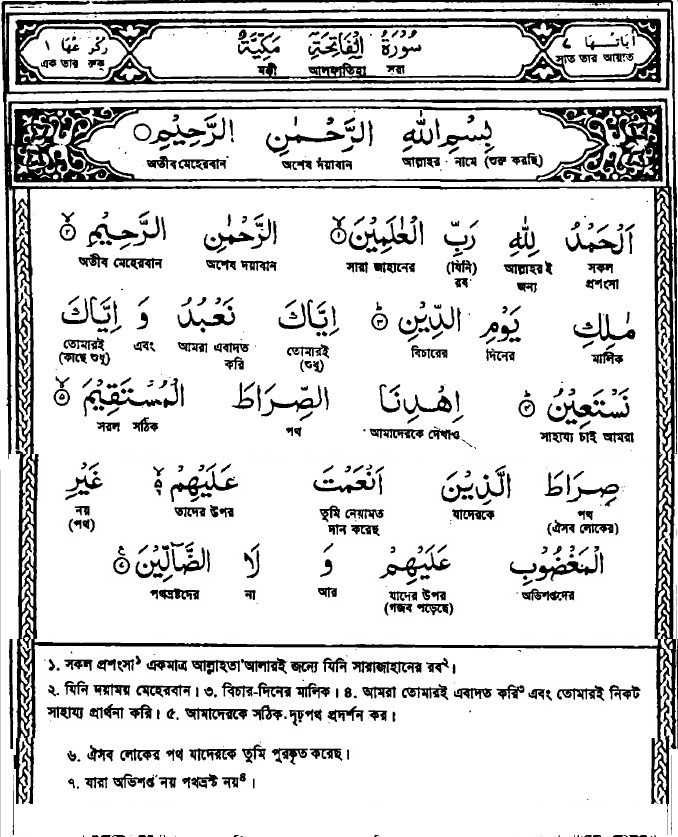

My Memorized Ayat
My Memorized Ayat
Notes of Quan & Hadith
Sura Names
1. Al-Fatihah
2.Al-Baqarah
3. Aali Imran
4. An-Nisa’
5. Al-Ma’idah
6. Al-An’am
7. Al-A’raf
8. Al-Anfal
9. At-Taubah
10. Yunus
11. Hud
12. Yusuf
13. Ar-Ra’d
14. Ibrahim
15. Al-Hijr
16. An-Nahl
17. Al-Isra’
18. Al-Kahf
19. Maryam
20. Ta-Ha
21. Al-Anbiya’
22. Al-Haj
23. Al-Mu’minun
24. An-Nur
25. Al-Furqan
26. Ash-Shu’ara’
29. Al-Ankabut
30. Ar-Rum
31. Luqman
32. As-Sajdah
33. Al-Ahzab
34. Saba’
35. Al-Fatir
36. Ya-Sin
37. As-Saffah
38. Sad
39. Az-Zumar
40. Ghafar
41. Fusilat
42. Ash-Shura
43. Az-Zukhruf
44. Ad-Dukhan
45. Al-Jathiyah
46. Al-Ahqaf
47. Muhammad
48. Al-Fat’h
49. Al-Hujurat
50. Qaf (Qaf)
51. Adz-Dzariyah
52. At-Tur
53. An-Najm
54. Al-Qamar
55. Ar-Rahman
56. Al-Waqi’ah
57. Al-Hadid
58. Al-Mujadilah
59. Al-Hashr
60. Al-Mumtahanah
61. As-Saf
62. Al-Jum’ah
63. Al-Munafiqun
64. At-Taghabun
65. At-Talaq
66. At-Tahrim
67. Al-Mulk –
68. Al-Qalam
69. Al-Haqqah
70. Al-Ma’arij
71. Nuh (Nuh)
72. Al-Jinn
73. Al-Muzammil
74. Al-Mudaththir
75. Al-Qiyamah
76. Al-Insan
77. Al-Mursalat
78. An-Naba’
79. An-Nazi’at
80. ‘Abasa
81. At-Takwir
82. Al-Infitar
83. Al-Mutaffifin
84. Al-Inshiqaq
85. Al-Buruj
86. At-Tariq
87. Al-A’la
88. Al-Ghashiyah
89. Al-Fajr
90. Al-Balad
91. Ash-Shams
92. Al-Layl
93. Adh-Dhuha
94. Al-Inshirah
95. At-Tin
96. Al-‘Alaq
97. Al-Qadar
98. Al-Bayinah
99. Az-Zalzalah
100. Al-‘Adiyah
101. Al-Qari’ah
102. At-Takathur
103. Al-‘Asr
104. Al-Humazah
105. Al-Fil
106. Quraish
107. Al-Ma’un
108. Al-Kauthar
109. Al-Kafirun
110. An-Nasr
111. Al-Masad
112. Al-Ikhlas
113. Al-Falaq
114. An-Nas
Al-Fatihah
Ayat No.
1-7
1. Al-Fatihah (the Opening)
